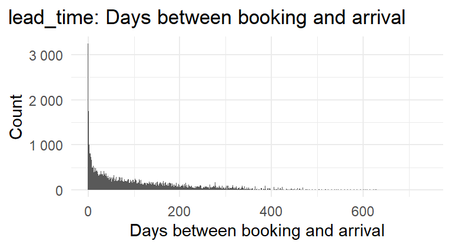
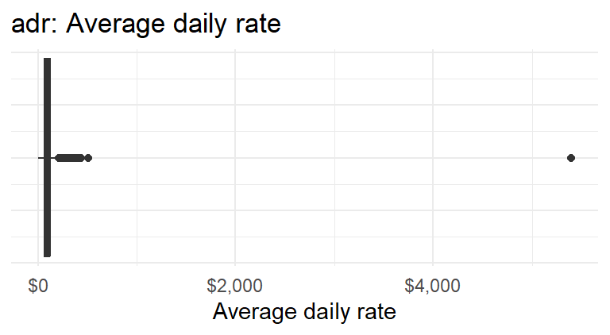
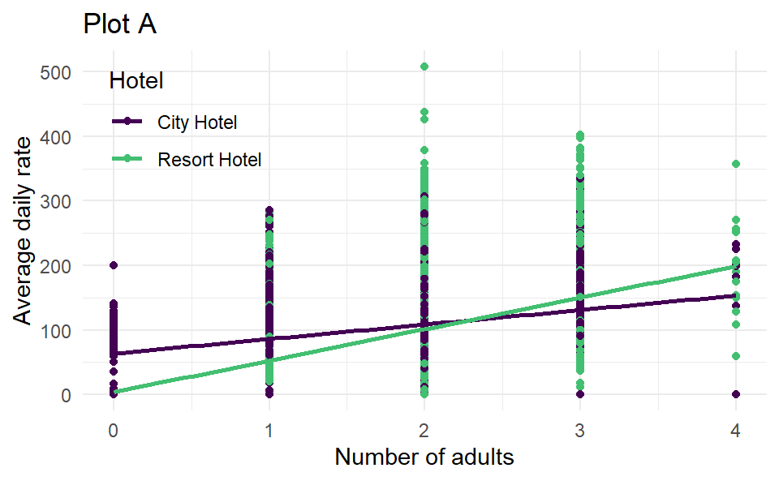
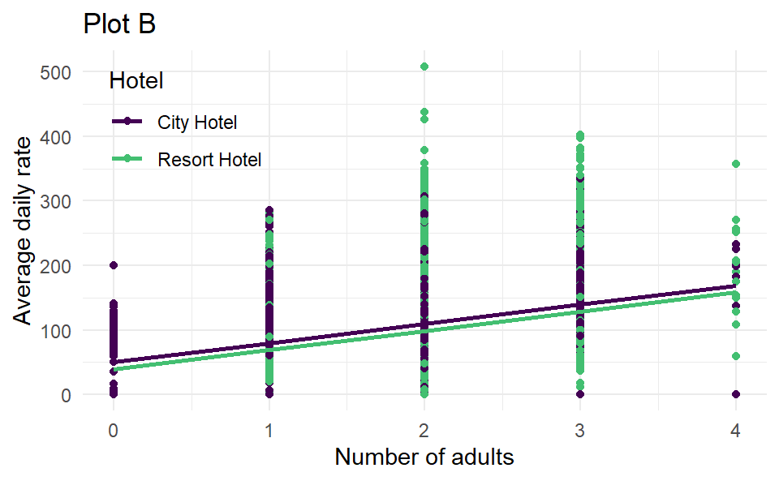

library(tidyverse)
library(tidymodels)Lab 5
Hotel cancellations
Lab
Introduction
In this lab you’ll work with hotel cancellations. The data describe the demand of two different types of hotels. Each observation represents a hotel booking between July 1, 2015 and August 31, 2017. Some bookings were canceled (is_canceled = 1) and others were kept, i.e., the guests checked into the hotel (is_canceled = 0). You can view the code book for all variables here.
Learning objectives
By the end of the lab, you will…
- Prepare a dataset for modeling: recode an outcome as a factor, filter out data quality issues, and split the data into training and testing sets.
- Fit logistic regression models and interpret their coefficients.
- Compute predicted probabilities by hand and with R, and classify observations.
- Evaluate a classifier on a testing set.
Getting started
Log in to RStudio, clone your lab-5 repo from GitHub, open your lab-5.qmd document, and get started!
TipClick here if you prefer to see step-by-step instructions
Step 1: Login to Posit Cloud
- Go to https://posit.cloud and go to our course workspace.
Step 2: Clone the repo & start new RStudio project
Go to the GitHub course organization and click on the repo with the prefix lab-5. It contains the starter documents you need to complete the lab.
Click on the green CODE button and select HTTPS (it should already be selected by default). Click on the clipboard icon to copy the repo URL.
In RStudio, go to New Project ➛ New Project from Git Repository ➛ Git
Paste the URL of your assignment repo into the dialog box URL of your Git Repository.
Click OK. The repo will be cloned and an RStudio project will be created.
Go to the Files pane and click lab-5.qmd to open the template Quarto file. This is where you will write up your code and narrative for the lab.
Step 3: Update the YAML
In lab-5.qmd, update the author field to your name, render your document, and examine the changes. Then, in the Git pane, stage your changes, add a commit message (e.g., “Added author name”), and click Commit. Then, push the changes to your GitHub repository and, in your browser, confirm that these changes have indeed propagated to your repository.
Important
If you run into any issues with the first steps outlined above, seek help before proceeding.
Important
Your repo also contains a data/ folder and a tests/ folder. Do not move, rename, edit, or delete them. The template reads data from data/ and uses tests/ to give you instant feedback on your answers (see “Checking your work” below).
Packages
In this lab we will work with the tidyverse and tidymodels packages.
- Run the code cell by clicking on the green triangle (play) button for the code cell labeled
load-packages. This loads the packages so that their features (the functions and datasets in them) are accessible from your Console. - Then, render the document that loads these packages to make their features available for other code cells in your Quarto document.
Checking your work
This lab is autograded. That changes two things about how you work:
Answers go into named objects. Each question below tells you exactly what to name your answer (e.g., “save the model as
cancel_fit”), and the template’s code cells already contain placeholders such ascancel_fit <- NULLwith a short comment describing what goes there. Replace theNULL(orNA) with your code, but do not change the object names. The autograder looks for these exact names; an answer stored under a different name receives no credit, even if the code is correct.You can check your answers as you go. After each question, the template contains a check chunk that runs
ottr::check()on that question. Run it to see the results of the public checks: quick tests that confirm your answer has the right structure (a fitted model, a data frame with the right columns, and so on). These checks are designed to tell you whether you’re on the right track without revealing the answer.The last check chunk checks your code style. It reports any lines that do not follow the course style guidelines (see below), with line numbers, so you can fix them before submitting.
NoteMultiple choice and short answers
Some questions ask you to record an answer by assigning a value to a variable. Letters and names must be typed as strings (in quotes), for example q2_why_not_linear <- "B" or q4_class <- "canceled". Numeric answers are typed as numbers without quotes, for example q5_TPR <- 0.5.
Warning
Passing all public checks does not guarantee full credit. When your submission is graded, additional hidden tests check your answers for full correctness. An answer with the right shape but wrong values can pass every public check and still lose points, so always sanity-check your results yourself. A check chunk that errors with something like “object not found” usually means you haven’t run the cells above it – run all chunks in order (or render the document) and try again. If your checks start failing after you re-run a chunk, restart R (Session ➛ Restart R) and run the chunks in order from the top.
WarningNever put these in your document
install.packages(), View(), and ? help requests belong in the Console, never in a code chunk. A document containing them will fail the autograder.
Guidelines
Code should follow the tidyverse style. Particularly,
there should be spaces before and line breaks after each
+when building aggplot,there should also be spaces before and line breaks after each
|>in a data transformation pipeline,there should be spaces around
=signs and spaces after commas.
Furthermore, all code should be visible in the PDF output, i.e., should not run off the page on the PDF. Lines should not span more than 80 characters; long lines should be split across multiple lines with line breaks.1
Important
You should have at least 3 commits with meaningful commit messages by the end of the assignment.
Data
The dataset, called hotels.csv, can be found in the data folder. The template reads it in with:
hotels <- read_csv("data/hotels.csv")The variables used in this lab are:
| Variable | Description |
|---|---|
hotel |
Type of hotel: City Hotel or Resort Hotel |
is_canceled |
Whether the booking was canceled: 1 if canceled, 0 if not (the guests checked in) |
lead_time |
Number of days between the date the booking was made and the arrival date |
adults |
Number of adults in the booking |
adr |
Average daily rate: the sum of all lodging transactions for the booking divided by the number of nights stayed, in dollars |
Below is an exploratory summary of some of the variables we will use in our analysis.
| Cancellation status | Number of bookings |
|---|---|
| 0 - Not canceled | 37583 |
| 1 - Canceled | 22112 |


| Number of adults | Number of bookings |
|---|---|
| 0 | 196 |
| 1 | 11478 |
| 2 | 44995 |
| 3 | 2984 |
| 4 | 33 |
| 5 | 2 |
| 6 | 1 |
| 10 | 1 |
| 20 | 1 |
| 26 | 2 |
| 40 | 1 |
| 55 | 1 |
Questions
Part 1 - Data prep
Question 1
1a. In a single pipeline starting from hotels, prepare the data for modeling and save the result as a new data frame named hotels_clean. The pipeline should:
- transform
is_canceledto the appropriate data class so that it uses informative labels ("not canceled"and"canceled"instead of 0 and 1, respectively), with the levels ordered such that when we fit a logistic regression model to predict this outcome, success is defined as"canceled"(what we’re predicting); and - based on the exploratory summaries above, address a few data quality issues by removing any bookings with average daily rate greater than $1,000 and any bookings with number of adults greater than or equal to 5.
1b. Split hotels_clean into a training set (75%) and a testing set (25%), setting the random seed to 1117 for reproducibility (the set.seed(1117) line is already in the template, immediately before the split). Save the split as hotels_split, the training set as hotels_train, and the testing set as hotels_test.
TipRender, commit, and push
Render, commit, and push your changes to GitHub with the commit message “Added answer for Question 1”.
Make sure to commit and push all changed files so that your Git pane is empty afterward.
Part 2 - Predicting cancellations
Using these data, one of our goals is to explore the following question:
Are bookings made further in advance more likely to be canceled?
The variable lead_time is the number of days between the date the booking was made and the arrival date.
Question 2
2a. In a single pipeline, calculate the number of bookings and the mean lead time for reservations that were canceled and reservations that were not canceled. The result should have the columns is_canceled, n, and mean_lead_time. Save it as lead_by_cancel.
Tip
Think carefully about which dataset you should use: hotels_clean, the training subset, or the testing subset?
2b. Record in q2_why_not_linear the option that best explains why we cannot use a linear model to model the relationship between whether a booking was canceled and its lead time:
A. A linear model requires the outcome to be normally distributed, which a yes/no outcome is not.
B. A linear model can only be fit when the predictor is categorical, and lead time is numeric.
C. A linear model would produce predicted values outside 0 to 1, which cannot be probabilities.
D. A linear model cannot be fit to a dataset with as many observations as this one has.
Question 3
3a. Fit a logistic regression model to predict whether a booking was canceled from lead_time, using the training set, and save it as cancel_fit. Display a tidy summary of the model output (tidy(cancel_fit) is already in the template).
3b. Record in q3_slope_interp the option that correctly interprets the slope coefficient. The model predicts that, for each additional day of lead time, …
A. the probability of cancellation is higher by a factor of about 1.006, on average.
B. the odds of cancellation are higher by a factor of about 1.006, on average.
C. the odds of cancellation are higher by a factor of about 0.006, on average.
D. the odds of cancellation are lower by a factor of about 1.006, on average.
TipRender, commit, and push
Render, commit, and push your changes to GitHub with the commit message “Added answers for Questions 2 and 3”.
Make sure to commit and push all changed files so that your Git pane is empty afterward.
Question 4
Consider a booking made 300 days in advance.
Let \(b_0\) be the estimated intercept and \(b_1\) the estimated slope from cancel_fit.
4a. Record in q4_formula which of the following expressions gives the predicted probability that this booking is canceled:
A. \(b_0 + b_1 \times 300\)
B. \(e^{\,b_0 + b_1 \times 300}\)
C. \(\dfrac{1 + e^{\,b_0 + b_1 \times 300}}{e^{\,b_0 + b_1 \times 300}}\)
D. \(\dfrac{e^{\,b_0 + b_1 \times 300}}{1 + e^{\,b_0 + b_1 \times 300}}\)
4b. Compute this probability by hand using the coefficients from your tidy output, and record it in q4_prob_hand as a number. (You may do the arithmetic in R, but write out the formula yourself rather than calling predict().)
4c. Now compute the same probability with R, using predict() and type = "prob" with a new data frame containing lead_time = 300. Save the result as q4_prob_r; the probability of cancellation is in its .pred_canceled column. It should agree with your by-hand value up to rounding.
4d. Using a probability threshold of 0.5, record the model’s classification of this booking in q4_class, as the string "canceled" or "not canceled".
4e. It turns out that this booking was actually canceled. Given that fact and the model’s classification, record in q4_outcome_type which of the following this booking is:
A. a true positive
B. a false positive
C. a true negative
D. a false negative
Question 5
5a. Use augment() to add predicted classes and probabilities to the testing set, and save the result as cancel_pred. The predicted class is in the .pred_class column.
5b. From cancel_pred, compute the following rates as proportions between 0 and 1, and record them in q5_TPR, q5_FPR, q5_TNR, and q5_FNR:
- True positive rate (TPR): of the bookings that were actually canceled, the proportion the model predicted to be canceled.
- False positive rate (FPR): of the bookings that were actually not canceled, the proportion the model predicted to be canceled.
- True negative rate (TNR): of the bookings that were actually not canceled, the proportion the model predicted to be not canceled.
- False negative rate (FNR): of the bookings that were actually canceled, the proportion the model predicted to be not canceled.
5c. Record in q5_interp the option that best describes what these rates say about the model:
A. The model correctly identifies most of the bookings that were actually canceled.
B. The model correctly identifies only a minority of the bookings that were actually canceled.
C. The model predicts cancellation for most of the bookings that were not actually canceled.
D. The model never predicts cancellation, so it misses every booking that was actually canceled.
TipRender, commit, and push
Render, commit, and push your changes to GitHub with the commit message “Added answers for Questions 4 and 5”.
Make sure to commit and push all changed files so that your Git pane is empty afterward.
Question 6
6a. Fit another model to predict whether a booking was canceled from lead_time and hotel type (Resort Hotel or City Hotel), with main effects only (no interaction), using the training set. Save it as cancel_hotel_fit and display a tidy output of the model.
6b. Record in q6_intercept_interp the option that correctly interprets the intercept:
A. For a City Hotel booking made 0 days in advance, the predicted probability of cancellation is about \(\dfrac{e^{-0.99}}{1+e^{-0.99}}\approx 0.27\).
B. For a Resort Hotel booking made 0 days in advance, the predicted probability of cancellation is about \(\dfrac{e^{-0.99}}{1+e^{-0.99}}\approx 0.27\).
C. For a City Hotel booking made 0 days in advance, the predicted probability of cancellation is about \(-0.99\).
D. For each additional day of lead time at a Resort Hotel, the predicted odds of cancellation change by a factor of about \(e^{-0.99} \approx 0.37\).
Part 3 - Predicting daily rates
Question 7
The dataset also contains information about the average daily rate (adr) for each booking. The following multiple linear regression model, fit on the training set, predicts adr from adults and hotel type.
# A tibble: 3 × 5
term estimate std.error statistic p.value
<chr> <dbl> <dbl> <dbl> <dbl>
1 (Intercept) 50.3 0.861 58.4 0
2 adults 29.7 0.444 67.0 0
3 hotelResort Hotel -10.9 0.458 -23.8 8.40e-1257a. Record in q7_adults the best interpretation of the slope coefficient for adults. For each additional adult in the booking, the average daily rate is predicted to be higher by $29.70
A. for Resort Hotels compared to City Hotels, on average.
B. for City Hotels compared to Resort Hotels, on average.
C. on average, without holding hotel type constant.
D. on average, holding hotel type constant.
7b. Record in q7_hotel the correct interpretation of the slope coefficient for hotel:
A. For each additional Resort Hotel booking, the predicted average daily rate is $10.90 lower, holding number of adults constant.
B. For each additional adult in the booking, the predicted average daily rate is $10.90 lower at Resort Hotels than at City Hotels, on average.
C. Resort Hotel bookings are predicted to have an average daily rate $10.90 lower than City Hotel bookings, on average, holding number of adults constant.
D. Resort Hotel bookings are predicted to have an average daily rate $10.90 higher than City Hotel bookings, on average, holding number of adults constant.
7c. Record in q7_intercept the correct interpretation of the intercept:
A. The predicted average daily rate for a booking with 0 adults at a Resort Hotel is $50.30.
B. The predicted average daily rate for a booking with 0 adults at a City Hotel is $50.30.
C. For each additional adult at a City Hotel, the average daily rate is predicted to be $50.30 higher.
D. The predicted average daily rate for a booking with 1 adult at a City Hotel is $50.30.
7d. Which of the following (Plot A or Plot B) is the correct visual representation of this model? Record your answer in q7_plot as "A" or "B".


Tip
Think about whether a model with only the main effects of adults and hotel, or one that also includes their interaction, produces lines with the same slope for both hotel types.
NoteWhat next?
If you were to continue this analysis, you could evaluate the daily rate model’s performance on the testing set, and explore including other predictors in both models to see if they improve performance.
TipRender, commit, and push
Render, commit, and push your final changes to GitHub with a meaningful commit message.
Make sure to commit and push all changed files so that your Git pane is empty afterward. We keep repeating this because it’s important and because we see students forget to do this.
Code style
The last check chunk in your template runs a style check on your whole document and reports every line that breaks one of the style guidelines above, with its line number. There is nothing to write for this question: fix the lines it reports, re-run the check, and repeat until it passes.
Wrap-up
Submission
Warning
Before you wrap up the assignment, make sure all of your files are updated in your GitHub repo. We will be checking these to make sure you have been committing and pushing changes (with descriptive commit messages).
You must turn in both the .qmd file and the PDF to Gradescope by the submission deadline to be considered “on time”.
Download your completed lab-5.qmd and lab-5.pdf files. To download a file from Posit Cloud, go to the Files pane, select the file by marking its checkbox, click More, then Export.
Submit BOTH lab-5.qmd and lab-5.pdf in Gradescope (accessed via Canvas), due by the deadline. (You will NOT need to select pages for the PDF.)
ImportantChecklist
Make sure you have:
- answered all questions, using the exact object names given in each question
- run the check chunk for each question and reviewed the results
- rendered your Quarto document
- committed and pushed everything to your GitHub repository so that the Git pane in RStudio is empty
- downloaded your QMD and PDF files from RStudio onto your computer
- uploaded your
lab-5.qmdandlab-5.pdffiles to the Lab 5 Gradescope assignment and confirmed the autograder ran successfully
Footnotes
Remember, haikus not novellas when writing code!↩︎